4. Setting CRS, GRS or PCS#
Please read Understanding Coordinate Reference System/ Spatial Reference System used in GIS to have a better understanding of the coordinate reference system.
Before starting this task, please refer to Singapore Master Plan & Import Vector Layers into QGIS tasks. You will require materials and knowledge from these two tasks to complete this task.
Import the “Master Plan 2014 Land Use” shapefile . Right click on the layer and choose set CRS -> Set Layer CRS
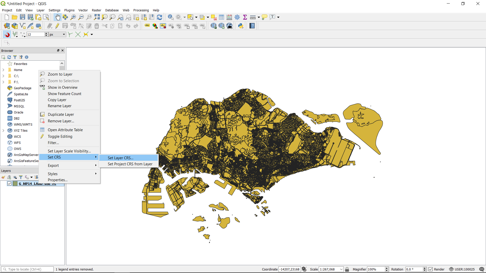
Singapore uses the SVY21 CRS. Search for SVY21 and choose the SVY21/ Singapore TM EPSG: 3414. While you click on the CRS, you will be able to see the extent the CRS covers.
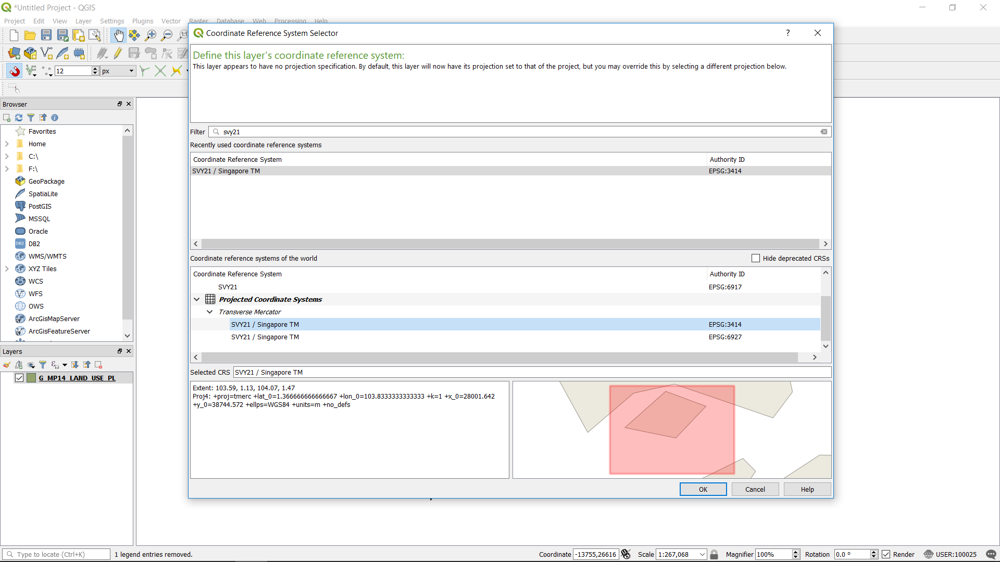
Set the CRS for the whole project by clicking the CRS symbol at the bottom right of window. The project CRS sets the CRS for the canvas. This will not affect the CRS of the individual layers. It is best to unify the CRS for the project and the layers to ensure that all layers are at their right position. When different CRS are used between different layers, maps will not be able to coincide with each other.
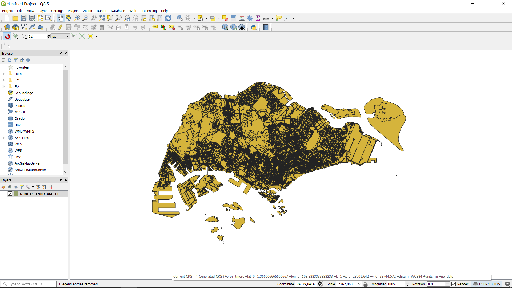
Once you click the symbol the CRS System Selector will pop out. Search for SVY21/ Singapore TM EPSG: 3414 and choose the CRS.
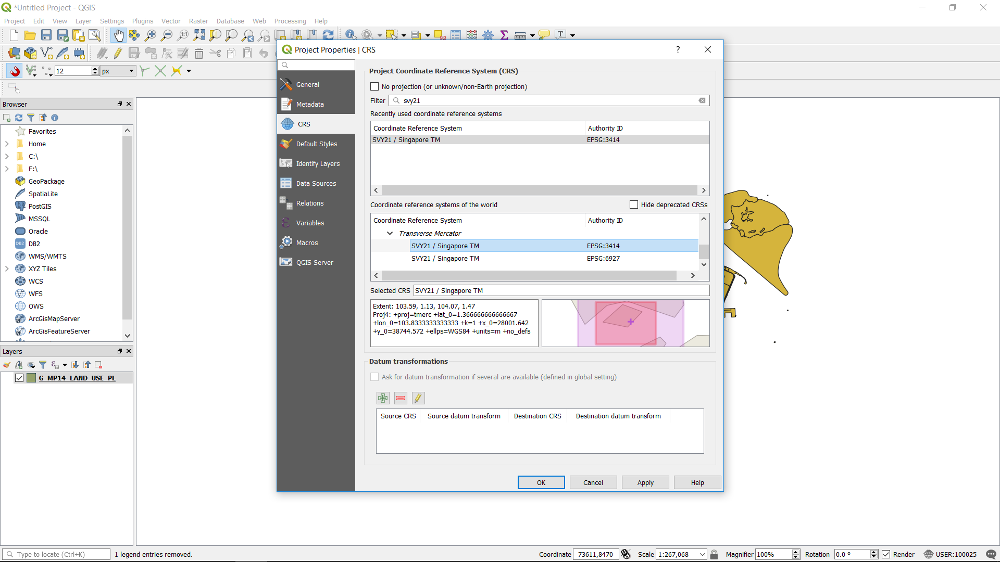
Both the layer CRS and project CRS are set.
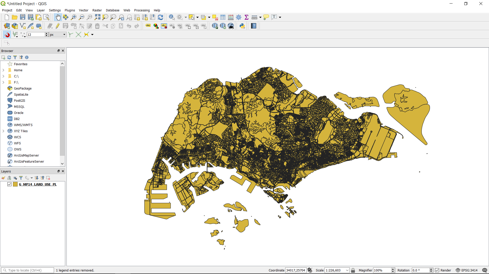
Next we will demonstrate how the map will warped when different CRS is used for the project and layer CRS. We changed the project CRS to epsg: 5850. As a result, the map is distorted as shown.
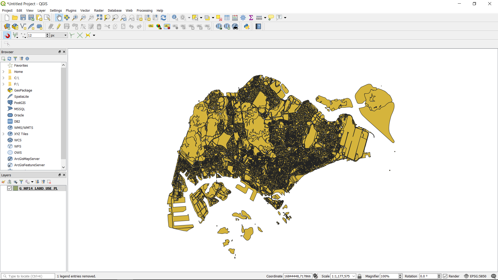
We revert back to the right CRS SVY21.
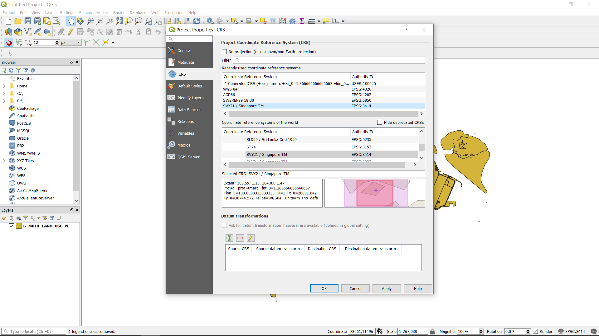
We import another shapefile, the “Master Plan 2014 Building”.
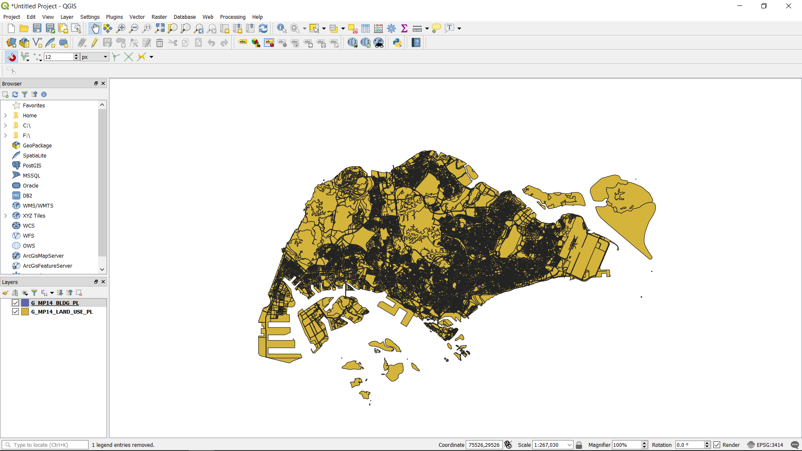
Turn off the “G_MP14_LAND_USE_PL” layer. You will see the building footprints of the “G_MP14_BLDG_PL” layer.

Next change the CRS of the “G_MP14_BLDG_PL” layer. Choose epsg: 5850. The footprints will disappear.
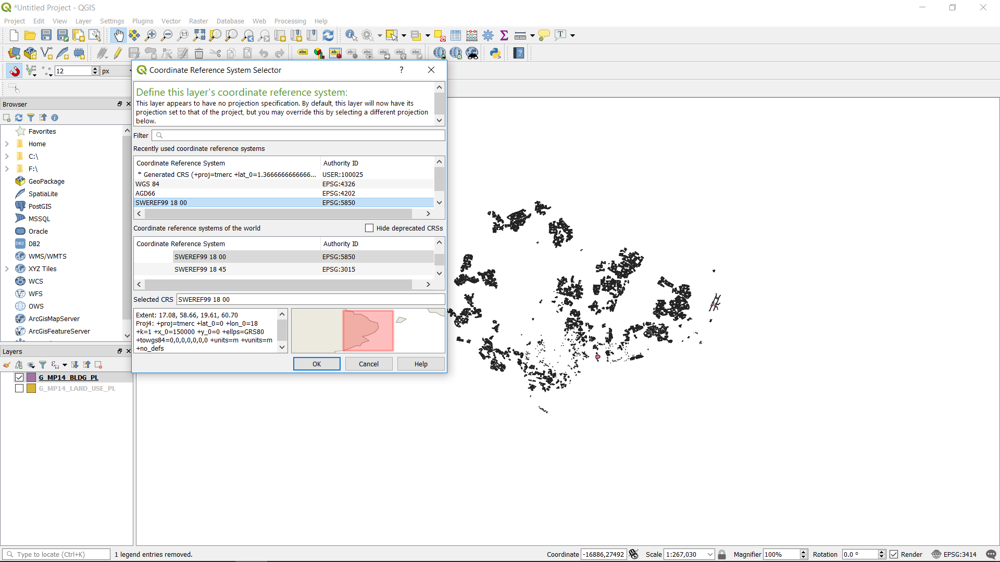
Right click on the “G_MP14_BLDG_PL” layer and click zoom to layer. The PCS distorted the building footprints so much, that it is not possible to see the footprints.
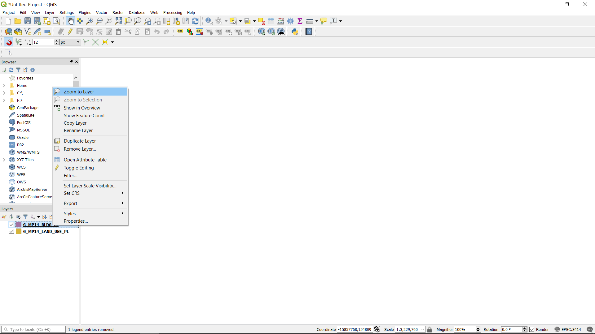
Revert back to the right CRS for the “G_MP14_BLDG_PL” layer. You will be able to see the footprints again. Always remember to standardised your project and layer CRS. So as to be able to see all your data.
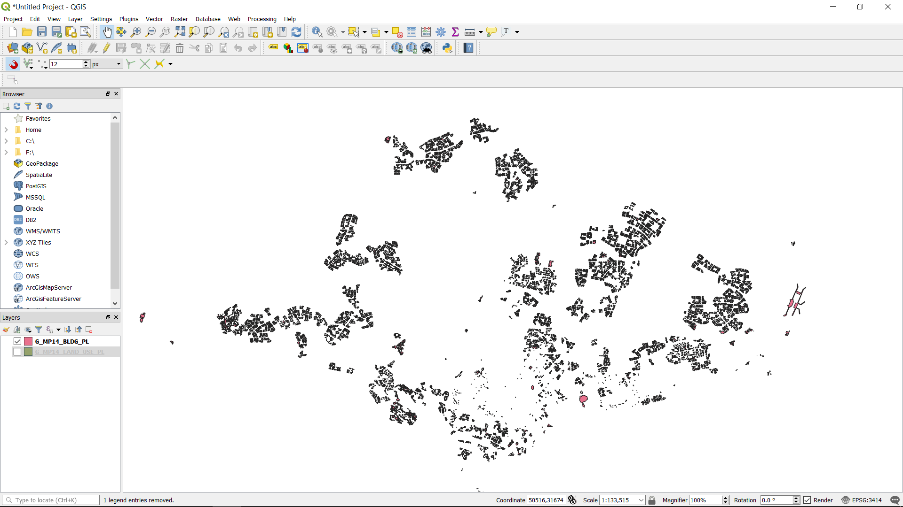
{kind=link}
{kind=link}
{kind=link}
{kind=link}
{kind=link}
{kind=link}
{kind=link}
{kind=link}
{kind=link}
{kind=link}
{kind=link}